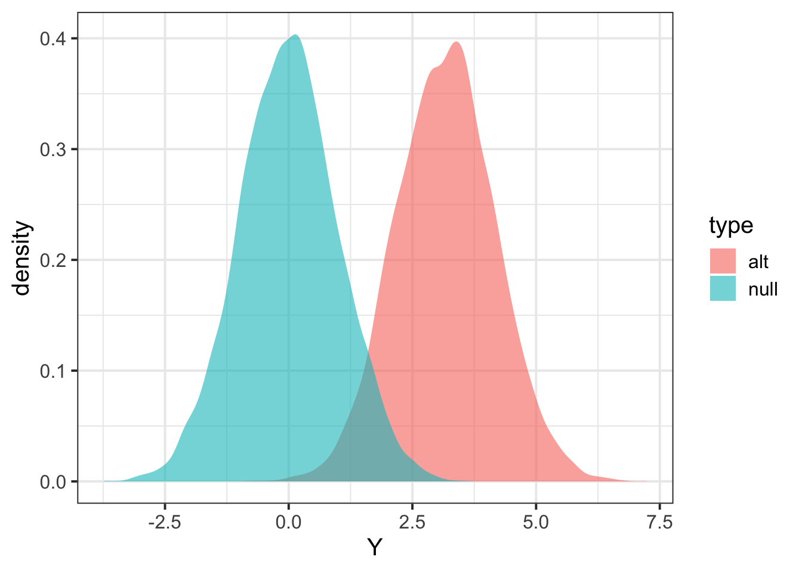

Last updated: 2020-01-17
Checks: 6 1
Knit directory: hgen471/
This reproducible R Markdown analysis was created with workflowr (version 1.6.0). The Checks tab describes the reproducibility checks that were applied when the results were created. The Past versions tab lists the development history.
The R Markdown file has unstaged changes. To know which version of the R Markdown file created these results, you’ll want to first commit it to the Git repo. If you’re still working on the analysis, you can ignore this warning. When you’re finished, you can run wflow_publish to commit the R Markdown file and build the HTML.
Great job! The global environment was empty. Objects defined in the global environment can affect the analysis in your R Markdown file in unknown ways. For reproduciblity it’s best to always run the code in an empty environment.
The command set.seed(20200105) was run prior to running the code in the R Markdown file. Setting a seed ensures that any results that rely on randomness, e.g. subsampling or permutations, are reproducible.
Great job! Recording the operating system, R version, and package versions is critical for reproducibility.
Nice! There were no cached chunks for this analysis, so you can be confident that you successfully produced the results during this run.
Great job! Using relative paths to the files within your workflowr project makes it easier to run your code on other machines.
Great! You are using Git for version control. Tracking code development and connecting the code version to the results is critical for reproducibility. The version displayed above was the version of the Git repository at the time these results were generated.
Note that you need to be careful to ensure that all relevant files for the analysis have been committed to Git prior to generating the results (you can use wflow_publish or wflow_git_commit). workflowr only checks the R Markdown file, but you know if there are other scripts or data files that it depends on. Below is the status of the Git repository when the results were generated:
Ignored files:
Ignored: .Rproj.user/
Unstaged changes:
Modified: analysis/L4-power.Rmd
Note that any generated files, e.g. HTML, png, CSS, etc., are not included in this status report because it is ok for generated content to have uncommitted changes.
These are the previous versions of the R Markdown and HTML files. If you’ve configured a remote Git repository (see ?wflow_git_remote), click on the hyperlinks in the table below to view them.
| File | Version | Author | Date | Message |
|---|---|---|---|---|
| Rmd | 2ba18cc | Yanyu Liang | 2020-01-17 | workflowr::wflow_git_commit(all = T) |
| html | 2ba18cc | Yanyu Liang | 2020-01-17 | workflowr::wflow_git_commit(all = T) |
| html | b2995de | Hae Kyung Im | 2020-01-15 | Build site. |
| Rmd | ca9b472 | Hae Kyung Im | 2020-01-15 | wflow_publish(files = “analysis/L4-power.Rmd”) |
| Rmd | 8eeb085 | Hae Kyung Im | 2020-01-15 | power calc |
| html | 8eeb085 | Hae Kyung Im | 2020-01-15 | power calc |
library(tidyverse)── Attaching packages ────────────────────────────────────────────────────────────── tidyverse 1.3.0 ──✓ ggplot2 3.2.1 ✓ purrr 0.3.3
✓ tibble 2.1.3 ✓ dplyr 0.8.3
✓ tidyr 1.0.0 ✓ stringr 1.4.0
✓ readr 1.3.1 ✓ forcats 0.4.0── Conflicts ───────────────────────────────────────────────────────────────── tidyverse_conflicts() ──
x dplyr::filter() masks stats::filter()
x dplyr::lag() masks stats::lag()fastlm = function(xx,yy)
{
## compute betahat (regression coef) and pvalue with Ftest
## for now it does not take covariates
df1 = 2
df0 = 1
ind = !is.na(xx) & !is.na(yy)
xx = xx[ind]
yy = yy[ind]
n = sum(ind)
xbar = mean(xx)
ybar = mean(yy)
xx = xx - xbar
yy = yy - ybar
SXX = sum( xx^2 )
SYY = sum( yy^2 )
SXY = sum( xx * yy )
betahat = SXY / SXX
RSS1 = sum( ( yy - xx * betahat )^2 )
RSS0 = SYY
fstat = ( ( RSS0 - RSS1 ) / ( df1 - df0 ) ) / ( RSS1 / ( n - df1 ) )
pval = 1 - pf(fstat, df1 = ( df1 - df0 ), df2 = ( n - df1 ))
res = list(betahat = betahat, pval = pval)
return(res)
}In this vignette, we’d like to:
As a concrete example, we pre-specify the model for continuous trait \(Y\) and genotype \(X\) as
\[Y = \beta X + \epsilon, \epsilon ~ N(0, \sigma_\epsilon^2)\]
where we assume
Note that the proportion of variation explained, minor allele frequency, effect size (\(\beta\)) are related under the model above and you will be/have already been asked to work it out in assignment.
To simulate genotype, we assume the locus is bialleilic and each individual is diploid. So that \(X \sim Binomial(2, f)\) with \(f\) as minor allele frequency (here we encode minor allele as 1 and major allele as 0).
Given genotype, to simulate phenotype, we need to know \(\beta\) and \(\sigma_\epsilon^2\). So, we first calculate the effect size and the variance of the noise term from the proportion of variation explained, variance of trait, and minor allele frequency of the SNP.
simulate_genotype = function(maf, num_individuals, num_replicates) {
# maf: minor allele frequency
# num_individuals: the number of individuals in each replicates
# num_replicates: the number of replicates
# it returns a matrix with num_individuals rows and num_replicates columns
genotype = matrix(
rbinom(num_individuals * num_replicates, 2, maf),
nrow = num_individuals,
ncol = num_replicates
)
return(genotype)
}
simulate_phenotype = function(genotype, beta, sig2epsi) {
# genotype: each column is one replicate
# beta: effect size of the linear model
# sig2epsi: the variance of the noise term
num_individuals = nrow(genotype)
num_replicates = ncol(genotype)
epsilon = matrix(
rnorm(num_individuals * num_replicates, mean = 0, sd = sqrt(sig2epsi)),
nrow = num_individuals,
ncol = num_replicates
)
phenotype = genotype * beta + epsilon
return(phenotype)
}
get_beta_and_sig2epsi = function(r2, sig2Y, maf) {
# r2: proportion of variation explained by SNP
# sig2Y: variance of trait
# maf: minor allele frequency of SNP
# it returns a list of beta and variance of noise term
## effect size is calculated as r2 = beta^2 *2*maf*(1-maf)
beta = sqrt( r2 * sig2Y / (2 * maf * (1 - maf)) )
sig2epsi = sig2Y * (1 - r2)
return(list(beta = beta, sig2epsi = sig2epsi))
}
linear_model_simulator = function(num_replicates, num_individuals, maf, r2, sig2Y) {
# simulate genotype
X = simulate_genotype(maf, num_individuals, num_replicates)
# calculate model parameters
params = get_beta_and_sig2epsi(r2, sig2Y, maf)
# simulate phenotype given genotype and model parameters
Y = simulate_phenotype(X, params$beta, params$sig2epsi)
return(list(Y = Y, X = X))
}Here we simulate 1000 individuals per replicate and 10000 replicates in total. With parameters:
# specify paramters
nindiv = 1000
nreplicate = 10000
maf = 0.30
r2 = 0.01
sig2Y = 1
# run simulator
## under the alternative
data_alt = linear_model_simulator(nreplicate, nindiv, maf, r2, sig2Y)
## under the null
data_null = linear_model_simulator(nreplicate, nindiv, maf, 0, sig2Y) The following chunk of R code implement hypothesis test procedure based on linear regression. Essentially, the R function calcz takes genotype X and Y and returns test statistic z-score.
runassoc = function(X,Y)
{
pvec = rep(NA,ncol(X))
bvec = rep(NA,ncol(X))
for(ss in 1:ncol(X))
{
fit = fastlm(X[,ss], Y[,ss])
pvec[ss] = fit$pval
bvec[ss] = fit$betahat
}
list(pvec=pvec, bvec=bvec)
}
p2z = function(b,p)
{
## calculate zscore from p-value and sign of effect size
sign(b) * abs(qnorm(p/2))
}
calcz = function(X,Y)
{
tempo = runassoc(X,Y)
p2z(tempo$bvec,tempo$pvec)
}Now that we can calculate test statistics under the null and alternative.
Zalt = calcz(data_alt$X, data_alt$Y)
Znull = calcz(data_null$X, data_null$Y)
tibble(Y = c(Zalt,Znull), type=c(rep("alt",length(Zalt)),rep("null",length(Znull))) ) %>% ggplot(aes(Y,fill=type)) + geom_density(color=NA,alpha=0.6) + theme_bw(base_size = 15)
| Version | Author | Date |
|---|---|---|
| c5dd6b8 | Yanyu Liang | 2020-01-17 |
## define significance level
alpha = 0.01
## find threshold for rejection; we want P(Znull > alpha/2) two-sided
threshold = quantile(Znull, 1 - alpha/2)
## calculate proportion of Zalt above threshold
mean(Zalt > threshold)[1] 0.7337## install.packages("pwr")
library(pwr)
pwr.r.test(n = nindiv, r= sqrt(r2), sig.level = alpha)
approximate correlation power calculation (arctangh transformation)
n = 1000
r = 0.1
sig.level = 0.01
power = 0.7234392
alternative = two.sided
sessionInfo()R version 3.6.2 (2019-12-12)
Platform: x86_64-apple-darwin15.6.0 (64-bit)
Running under: macOS High Sierra 10.13.6
Matrix products: default
BLAS: /Library/Frameworks/R.framework/Versions/3.6/Resources/lib/libRblas.0.dylib
LAPACK: /Library/Frameworks/R.framework/Versions/3.6/Resources/lib/libRlapack.dylib
locale:
[1] en_US.UTF-8/en_US.UTF-8/en_US.UTF-8/C/en_US.UTF-8/en_US.UTF-8
attached base packages:
[1] stats graphics grDevices utils datasets methods base
other attached packages:
[1] pwr_1.2-2 forcats_0.4.0 stringr_1.4.0 dplyr_0.8.3
[5] purrr_0.3.3 readr_1.3.1 tidyr_1.0.0 tibble_2.1.3
[9] ggplot2_3.2.1 tidyverse_1.3.0 workflowr_1.6.0
loaded via a namespace (and not attached):
[1] tidyselect_0.2.5 xfun_0.11 haven_2.2.0 lattice_0.20-38
[5] colorspace_1.4-1 vctrs_0.2.1 generics_0.0.2 htmltools_0.4.0
[9] yaml_2.2.0 rlang_0.4.2 later_1.0.0 pillar_1.4.3
[13] withr_2.1.2 glue_1.3.1 DBI_1.1.0 dbplyr_1.4.2
[17] modelr_0.1.5 readxl_1.3.1 lifecycle_0.1.0 munsell_0.5.0
[21] gtable_0.3.0 cellranger_1.1.0 rvest_0.3.5 evaluate_0.14
[25] labeling_0.3 knitr_1.26 httpuv_1.5.2 fansi_0.4.0
[29] broom_0.5.3 Rcpp_1.0.3 promises_1.1.0 backports_1.1.5
[33] scales_1.1.0 jsonlite_1.6 farver_2.0.1 fs_1.3.1
[37] hms_0.5.3 digest_0.6.23 stringi_1.4.3 grid_3.6.2
[41] rprojroot_1.3-2 cli_2.0.0 tools_3.6.2 magrittr_1.5
[45] lazyeval_0.2.2 crayon_1.3.4 whisker_0.4 pkgconfig_2.0.3
[49] zeallot_0.1.0 xml2_1.2.2 reprex_0.3.0 lubridate_1.7.4
[53] rstudioapi_0.10 assertthat_0.2.1 rmarkdown_2.0 httr_1.4.1
[57] R6_2.4.1 nlme_3.1-143 git2r_0.26.1 compiler_3.6.2